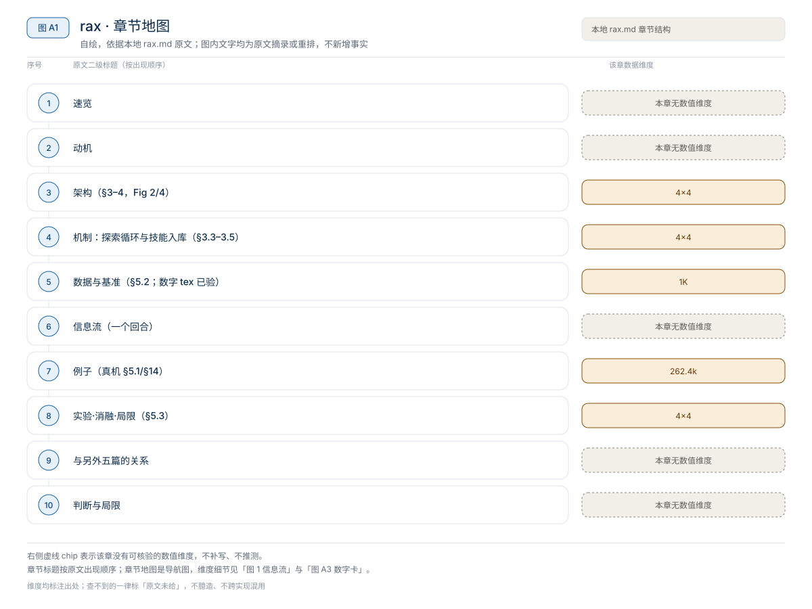
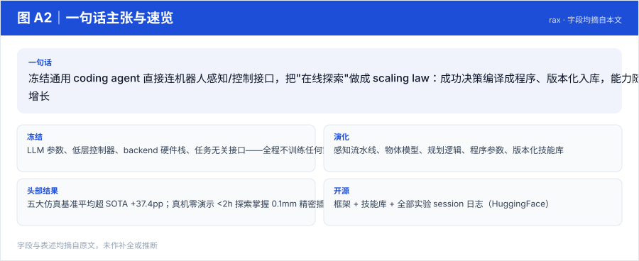
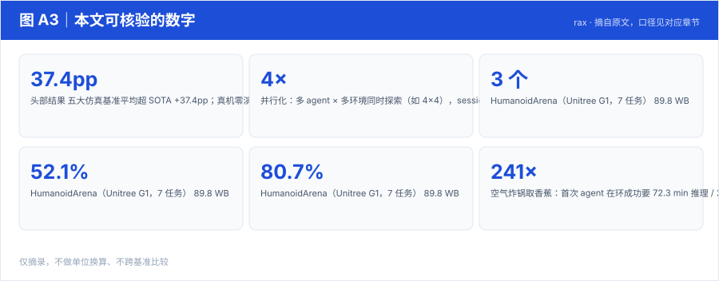
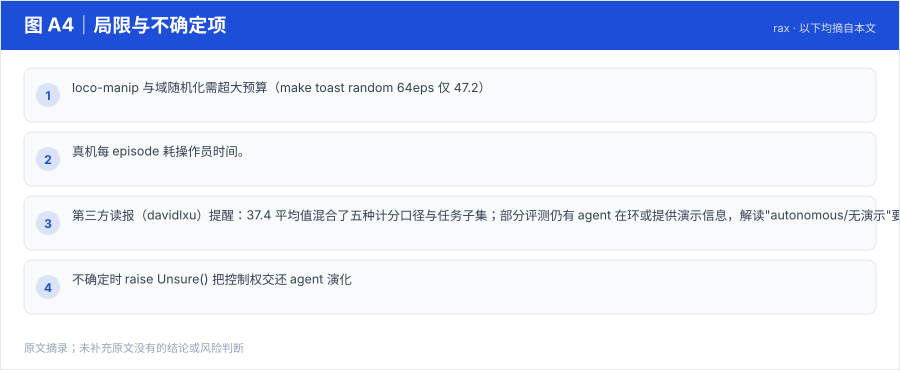

【Harness VLA · 自我进化与技能库】AdaHVLA 深读：harness 也要版本管理——修订图驱动的自适应协调层
在任务级推理器与 VLA 之间加一段可编辑的协调代码，用机器人经验迭代修订它；解耦多 agent 适配（证据分析 / harness 修订 / 行为评估分置于不同上下文）+ 有状态修订图把证据-假设-修订-效果连成图——NaVILA-LH 22.5%→57.5%，操纵任务跨三个 VLA 底座最高 +30.8pp
Harness03-自我进化与技能库
冻结通用 coding agent 直接连机器人感知/控制接口，把"在线探索"做成 scaling law：成功决策编译成程序、版本化入库，能力随探索预算单调增长
原题与资源：Scaling Online Exploration for Robot Agents (RAX) · arXiv:2610.22496 · 代码
一句话：冻结通用 coding agent 直接连机器人感知/控制接口，把"在线探索"做成 scaling law：成功决策编译成程序、版本化入库，能力随探索预算单调增长
阅读成本：正文约 3982 字 / 9 个章节 / 4 张图；目录按本文原有章节顺序排列，章节内容未改动。
目录（点击跳到对应章节）：

图 A1：本文章节地图（节点即原文 h2 标题）。自绘，依据本文，不新增事实。
| 项 | 内容 |
|---|---|
| 一句话 | 冻结通用 coding agent 直接连机器人感知/控制接口，把"在线探索"做成 scaling law：成功决策编译成程序、版本化入库，能力随探索预算单调增长 |
| 冻结 | LLM 参数、低层控制器、backend 硬件栈、任务无关接口——全程不训练任何策略，无 VLA |
| 演化 | 感知流水线、物体模型、规划逻辑、程序参数、版本化技能库 |
| 头部结果 | 五大仿真基准平均超 SOTA +37.4pp；真机零演示 <2h 探索掌握 0.1mm 精密插孔 |
| 开源 | 框架 + 技能库 + 全部实验 session 日志（HuggingFace） |

图 A2：一句话主张与速览字段。自绘，依据本文，不新增事实。

图 A3：本文可核验的数字摘录。自绘，依据本文，不新增事实。
一个具体任务走一遍 · 本文可核验数字与字段速查（以下均摘自原文，未作推算）：
"认知架构"五件套：
| 模块 | 内容 | 来源/性质 |
|---|---|---|
| 编码 agent | 冻结 LLM（Claude Code / Codex），接任务描述 + 少量目标图 + episode 预算 | 冻结 |
| 多模态感知 | RGB、深度、相机参数、力信号；agent 自己写 3D 点云/物体铰接模型拟合程序 | 探索涌现 |
| 控制接口 | 机器人 SDK 以 MCP 工具暴露：IK、URDF、碰撞感知运动规划、robot-only preview | 冻结 backend |
| 自主机器人程序 | 决策序列编译成独立 Python 程序（前置条件→动作→验证闭环），高频执行；不确定时 raise Unsure() 把控制权交还 agent | 演化 |
| 持久记忆三层 | 会话内 scratch pad（上下文压缩）→ 跨任务工作区 → git 式版本化技能库（每 session 一分支，验证后合并） | 演化 |
前后端分离（§4.1）：agent 与程序只能过工具接口，碰不到控制器/驱动/安全机制——多本体支持"by construction"。
论文笔记作者（davidlxu）给的形式化（非论文训练目标）：P_{k+1} = Revise_LLM(P_k, E_k, M_k)，a_t = P_k(o_{≤t})。
| 基准 | RAX | 最强基线 | 备注 |
|---|---|---|---|
| RoboDojo（7 任务） | 78.3 | VPP2 24.9 | pour by language 100.0；sweep blocks random 71.7 vs 8.0 |
| BEHAVIOR-1K（6 长程家务） | Q-score 46.5 | RLC 8.2 | 128 探索 episodes；loading the car 100 |
| HumanoidArena（Unitree G1，7 任务） | 89.8 | WB-WAM 81.9 | 仅 3 个演示 vs WB-WAM 100 演示；52.1%（2eps）→80.7%（32eps） |
| DexJoCo（11 任务） | 96.7 | ME-Dex 65.3 | 2eps 31.9→8eps 86.9→32eps 96.7 |
| LIBERO | 98.5 | VPP2 98.8 / Cosmos 98.5 | 持平（标准 LIBERO 已饱和） |
| LIBERO-Pro（位置扰动） | 零适应 76.0 → 5eps 适应 84.4 | VPP2 42.3；ASPIRE 63.2 | 平均领先 SOTA +37.4 |
RoboDojo 探索预算 scaling（成功率 %，预算 4→64）
| 任务 | VPP2 | Simate | RAX(预算4) | RAX(8) | RAX(16) | RAX(32) | RAX(64) |
|---|---|---|---|---|---|---|---|
| Plug charger | 16.7 | 29.3 | 26.0 | 94.0 | – | – | – |
| Pour by language | 0.0 | 0.0 | 94.4 | 100.0 | – | – | – |
| Make toast random | 38.0 | 7.7 | – | – | 2.5 | 31.7 | 47.2 |
| Sweep blocks random | 1.3 | 0.0 | – | – | 53.3 | 68.3 | 71.7 |
LIBERO / LIBERO-Pro（50 demos 基线 vs 零演示）： LIBERO avg——OpenVLA 76.5 · π0 94.2 · π0.5 96.9 · VPP2 98.8 · RAX 98.5（0 demos）；LIBERO-Pro（位置扰动）avg——π0.5 20.8 · VPP2 42.3 · ASPIRE 63.2 · RAX 76.0（无适应）/ 84.4（适应后，0 demos）。
任务 + RGB-D + 力信号 ──▶ 冻结 coding agent（慢速在环）
├─ 写/调感知程序：深度→3D 点云→物体几何/铰接轴/可操作部位
├─ 经 MCP 工具：IK → 碰撞感知规划 → preview → 执行
├─ 失败 → 诊断 → 改程序（或 raise Unsure() 交还）
└─ 无人值守成功 ──▶ 编译为独立程序（前置条件+动作+验证）──▶ git 分支合并入技能库
之后：同类任务 ──▶ 检索技能 ──▶ 纯程序高频执行（LLM 不在环），18 秒 vs 72 分钟关键解耦：学习发生在 agent 在环时，执行发生在程序自主时；backend 保留最终安全权（joint limits、operator arming），agent 生成的碰撞检查只是补充。
本文判断：作者押注：机器人的 o1 时刻来自 Scaling Exploration，而非 Scaling Data
局限与不确定项（以下均摘自本文，未作推断）：

图 A4：局限与不确定项摘录。自绘，依据本文，不新增事实。
覆盖范围：本页新增的导读、目录、章节地图、数字卡与局限清单，均为原文信息的重排或摘录；正文、数据与实验结论未改动。